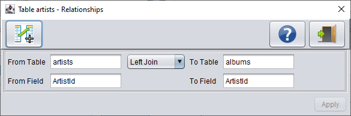
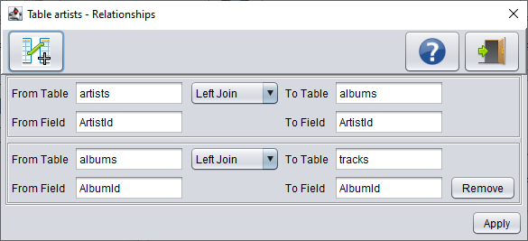
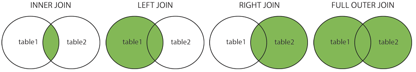

In this screen you can join one or more tables together in the database. By default you'll see here the
already existing relationships in the database from the current table to another table (and vice versa)
that are defined with foreign keys. Foreign keys link data in one table to the data in another table.
A foreign key column in a table points to a column (= field) with unique values in another table (often the
primary key column) to create a way of cross-referencing the two tables. If a column is assigned a
foreign key, each row of that column must contain a value that exists in the "foreign" column it references.
The referenced (i.e. "foreign") column must contain only unique values - often it is the primary key of
its table.

Buttons
Button
Description
Add a new relationship
Shows information about this screen
Exits the screen
Remove
Removes a manually defined relationship
Apply
Apply the changes made on this screen
Notes
DBConvert shows foreign key relationships only one level deep. This means that it shows the relation from
table "Artists" to "Albums" but doesn't show the relationship between "Albums" and table "Tracks" as well.
This last relationship can however be added manually by clicking the "Add a new relationship" button.
Like done here:

Note that you have the option to remove that relationship with the "Remove" button in case you no longer
need it. Existing foreign key relationships cannot be deleted.
Field Definition
All fields on this screen are read only, with the exception of the "Join" combobox.
From Table
Shows the table you are linking from (the "left" table). First entry would be the current selected table.
Join
The SQL JOIN is a command clause that combines records from two or more tables in a database.
It is a means of combining data in fields from two tables by using values common to each table.
Here are the different types of the Joins in SQL (note: some databases may not support them all):
Inner Join: Returns records that have matching values in both tables
Left Join: Returns all records from the left table, and the matched records from the right table
Right Join: Returns all records from the right table, and the matched records from the left table
Full Join: Returns all records when there is a match in either left or right table

To Table
Shows the table you are linking to (the "right" table).
From Field
The "From Table" field(s) or foreign key used for linking with the "To Table".
To Field
The "To Table" field(s) used for the link with the "From Table".